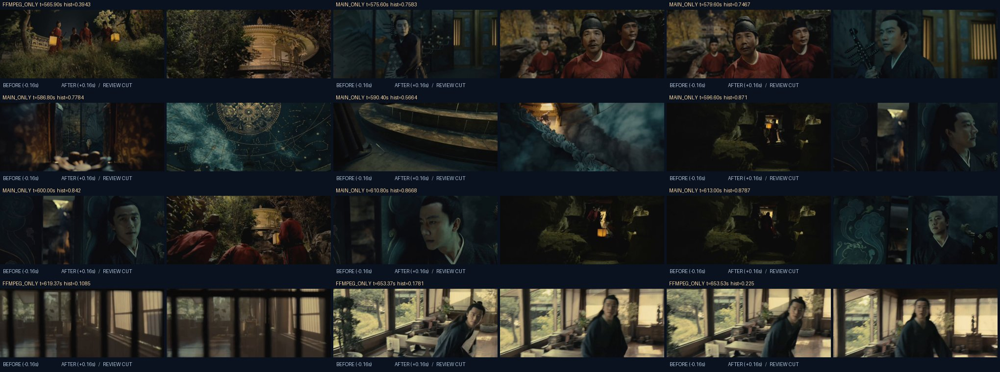
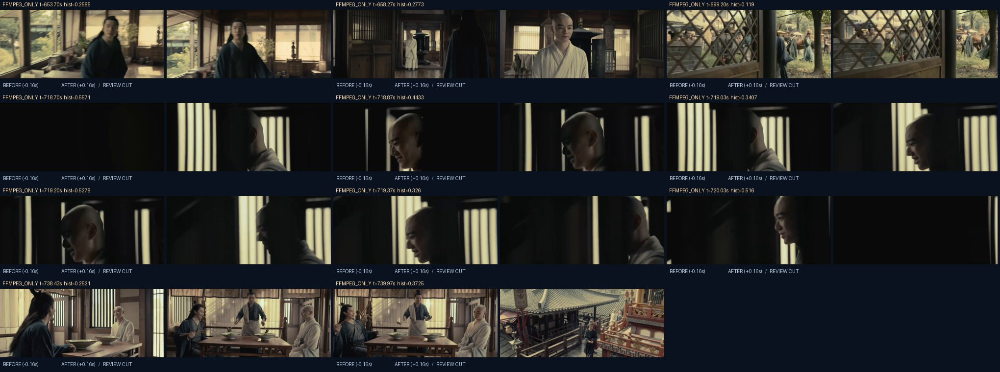

主算法85、第二算法94个候选切点；在0.45秒内匹配 66处，分歧 47处。无人工签核时不是最终镜头表。
每个候选切点取前后各0.16秒画面进行对比。镜头运动、闪白、渐隐和快速演员运动均可能导致误判；算法不自动调整影片时间轴。
复核操作可使用命令：python cut_review.py mark --id MAIN_ONLY_... --decision CONFIRMED_CUT --reviewer 导演 --reason 说明。
此操作仅保存判断依据；不会默默改变镜头ID或复刻候选。
| 编号 | 时间码 | 来自 | 色彩突变量 | 复核状态 | 对照 |
|---|---|---|---|---|---|
| FFMPEG_ONLY_0.100 | 0.1s | FFMPEG_ONLY | 0.5187 | NOT_REVIEWED | 比对图 |
| FFMPEG_ONLY_10.900 | 10.9s | FFMPEG_ONLY | 0.2948 | NOT_REVIEWED | 比对图 |
| FFMPEG_ONLY_21.067 | 21.067s | FFMPEG_ONLY | 0.362 | NOT_REVIEWED | 比对图 |
| FFMPEG_ONLY_67.367 | 67.367s | FFMPEG_ONLY | 0.2899 | NOT_REVIEWED | 比对图 |
| FFMPEG_ONLY_67.533 | 67.533s | FFMPEG_ONLY | 0.2224 | NOT_REVIEWED | 比对图 |
| FFMPEG_ONLY_133.133 | 133.133s | FFMPEG_ONLY | 0.3398 | NOT_REVIEWED | 比对图 |
| FFMPEG_ONLY_185.100 | 185.1s | FFMPEG_ONLY | 0.4083 | NOT_REVIEWED | 比对图 |
| FFMPEG_ONLY_213.067 | 213.067s | FFMPEG_ONLY | 0.3728 | NOT_REVIEWED | 比对图 |
| FFMPEG_ONLY_243.300 | 243.3s | FFMPEG_ONLY | 0.4208 | NOT_REVIEWED | 比对图 |
| MAIN_ONLY_257.200 | 257.2s | MAIN_ONLY | 0.8573 | NOT_REVIEWED | 比对图 |
| MAIN_ONLY_259.600 | 259.6s | MAIN_ONLY | 0.898 | NOT_REVIEWED | 比对图 |
| MAIN_ONLY_271.200 | 271.2s | MAIN_ONLY | 0.7075 | NOT_REVIEWED | 比对图 |
| MAIN_ONLY_278.000 | 278.0s | MAIN_ONLY | 0.8539 | NOT_REVIEWED | 比对图 |
| MAIN_ONLY_316.400 | 316.4s | MAIN_ONLY | 0.673 | NOT_REVIEWED | 比对图 |
| MAIN_ONLY_337.000 | 337.0s | MAIN_ONLY | 0.6721 | NOT_REVIEWED | 比对图 |
| FFMPEG_ONLY_338.533 | 338.533s | FFMPEG_ONLY | 0.3856 | NOT_REVIEWED | 比对图 |
| MAIN_ONLY_358.200 | 358.2s | MAIN_ONLY | 0.4404 | NOT_REVIEWED | 比对图 |
| FFMPEG_ONLY_373.200 | 373.2s | FFMPEG_ONLY | 0.4105 | NOT_REVIEWED | 比对图 |
| MAIN_ONLY_408.800 | 408.8s | MAIN_ONLY | 0.7746 | NOT_REVIEWED | 比对图 |
| FFMPEG_ONLY_447.567 | 447.567s | FFMPEG_ONLY | 0.3158 | NOT_REVIEWED | 比对图 |
| FFMPEG_ONLY_476.067 | 476.067s | FFMPEG_ONLY | 0.3386 | NOT_REVIEWED | 比对图 |
| MAIN_ONLY_520.600 | 520.6s | MAIN_ONLY | 0.8868 | NOT_REVIEWED | 比对图 |
| MAIN_ONLY_540.400 | 540.4s | MAIN_ONLY | 0.5189 | NOT_REVIEWED | 比对图 |
| MAIN_ONLY_559.400 | 559.4s | MAIN_ONLY | 0.7031 | NOT_REVIEWED | 比对图 |
| FFMPEG_ONLY_565.900 | 565.9s | FFMPEG_ONLY | 0.3943 | NOT_REVIEWED | 比对图 |
| MAIN_ONLY_575.600 | 575.6s | MAIN_ONLY | 0.7583 | NOT_REVIEWED | 比对图 |
| MAIN_ONLY_579.600 | 579.6s | MAIN_ONLY | 0.7467 | NOT_REVIEWED | 比对图 |
| MAIN_ONLY_586.800 | 586.8s | MAIN_ONLY | 0.7784 | NOT_REVIEWED | 比对图 |
| MAIN_ONLY_590.400 | 590.4s | MAIN_ONLY | 0.5664 | NOT_REVIEWED | 比对图 |
| MAIN_ONLY_596.600 | 596.6s | MAIN_ONLY | 0.871 | NOT_REVIEWED | 比对图 |
| MAIN_ONLY_600.000 | 600.0s | MAIN_ONLY | 0.842 | NOT_REVIEWED | 比对图 |
| MAIN_ONLY_610.800 | 610.8s | MAIN_ONLY | 0.8668 | NOT_REVIEWED | 比对图 |
| MAIN_ONLY_613.000 | 613.0s | MAIN_ONLY | 0.8787 | NOT_REVIEWED | 比对图 |
| FFMPEG_ONLY_619.367 | 619.367s | FFMPEG_ONLY | 0.1085 | NOT_REVIEWED | 比对图 |
| FFMPEG_ONLY_653.367 | 653.367s | FFMPEG_ONLY | 0.1781 | NOT_REVIEWED | 比对图 |
| FFMPEG_ONLY_653.533 | 653.533s | FFMPEG_ONLY | 0.225 | NOT_REVIEWED | 比对图 |
| FFMPEG_ONLY_653.700 | 653.7s | FFMPEG_ONLY | 0.2585 | NOT_REVIEWED | 比对图 |
| FFMPEG_ONLY_658.267 | 658.267s | FFMPEG_ONLY | 0.2773 | NOT_REVIEWED | 比对图 |
| FFMPEG_ONLY_699.200 | 699.2s | FFMPEG_ONLY | 0.119 | NOT_REVIEWED | 比对图 |
| FFMPEG_ONLY_718.700 | 718.7s | FFMPEG_ONLY | 0.5571 | NOT_REVIEWED | 比对图 |
| FFMPEG_ONLY_718.867 | 718.867s | FFMPEG_ONLY | 0.4433 | NOT_REVIEWED | 比对图 |
| FFMPEG_ONLY_719.033 | 719.033s | FFMPEG_ONLY | 0.3407 | NOT_REVIEWED | 比对图 |
| FFMPEG_ONLY_719.200 | 719.2s | FFMPEG_ONLY | 0.5278 | NOT_REVIEWED | 比对图 |
| FFMPEG_ONLY_719.367 | 719.367s | FFMPEG_ONLY | 0.326 | NOT_REVIEWED | 比对图 |
| FFMPEG_ONLY_720.033 | 720.033s | FFMPEG_ONLY | 0.516 | NOT_REVIEWED | 比对图 |
| FFMPEG_ONLY_738.433 | 738.433s | FFMPEG_ONLY | 0.2521 | NOT_REVIEWED | 比对图 |
| FFMPEG_ONLY_739.967 | 739.967s | FFMPEG_ONLY | 0.3725 | NOT_REVIEWED | 比对图 |


参考素材用于复核，不是AI生成，也不代表已经完成复刻。